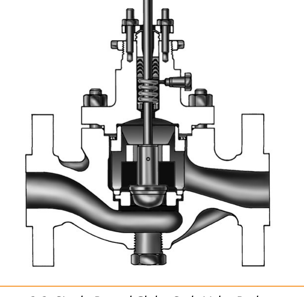
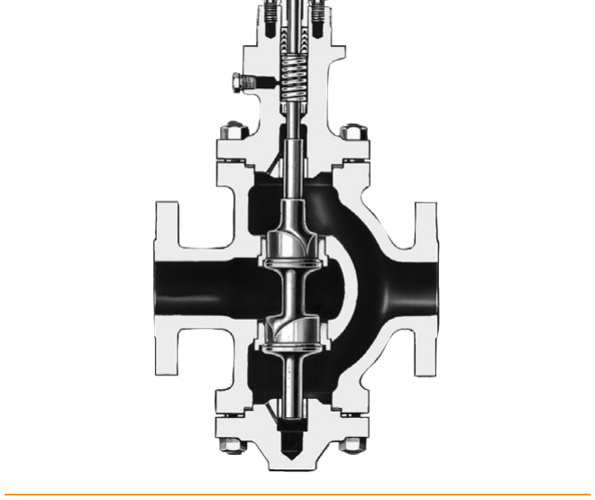

Globe Body Constructions

The simplest, tightest-shutoff globe construction — one seating surface, widely used in process control from NPS 1–4. The cage itself guides the plug and balances pressure across it — permits a smaller actuator, and can carry a soft seat for bubble-tight shutoff.
The cage itself guides the plug and balances pressure across it — permits a smaller actuator, and can carry a soft seat for bubble-tight shutoff.

Splits flow across two ports, balancing dynamic force on the plug for less required actuator thrust — the industry has mostly moved away from this construction.After Control Valve Handbook, 6th ed., Figs. 3.3, 3.4, 3.5 — used directly. Component Index: cvh-cmp-single-ported-globe-valve-body, cvh-cmp-cage-style-trim-balanced-plug-soft-seat, cvh-cmp-double-ported-globe-valve-body-reverse-acting.